In Webflow:
Inside Webflow section off a part of the screen you want to turn into a Symbol. Webflow has a video tutorial on how to do this but we can go through the steps here:
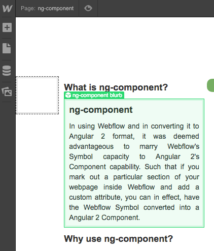
In Webflow, you create a Symbol in order to preserve text and styles and HTML between pages. In Angular 2, with FreeFormJS's help, you can use the same Symbol as a component where you can also centralize behaviour into a specific location. We'll use the copyright info at the bottom of the screen as an example:
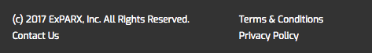
First select the <div> that you want to turn into a Webflow Symbol:
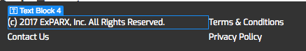
Then click the + symbol to the top left of the Webflow editor without loosing the <div> selection. From there click on the word 'Symbols':
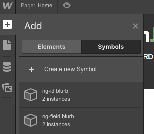
From there, type in the name of Symbol (it can be anything and won't affect anything in your Angular 2 code):
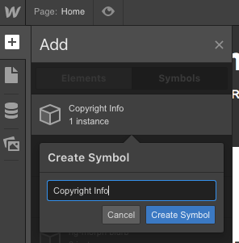
As soon as you click 'Create Symbol' the Symbol is now created in Webflow, but you are not done yet:
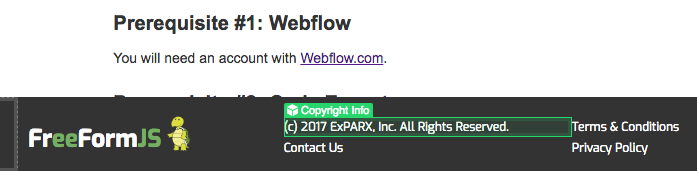
You now need to, you guessed it, apply a custom attribute in order for Angular 2 to recognize this as a component. To do so you merely click on the Symbol twice to enter it's editing mode:
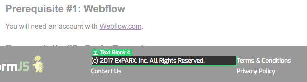
While in the editing mode of the Symbol, you now need to click on the star shaped symbol to the top right:
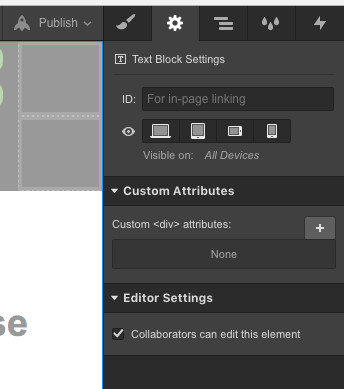
From there add ng-component and this time give it a name that will translate easily into your Angular 2 component. Camel case is recommended:
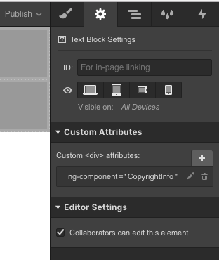
You are now ready to download your Webflow project into your Angular 2 project using FreeFormJS
In Angular 2:
By default all pages other than the index.html file are automatically converted into Angular 2 style components. Each html page has it's own component with the app.component and the home.component reserved for the index.html. To keep page components separate from Webflow Symbol components, FreeFormJS merely puts them into separate parent directories:
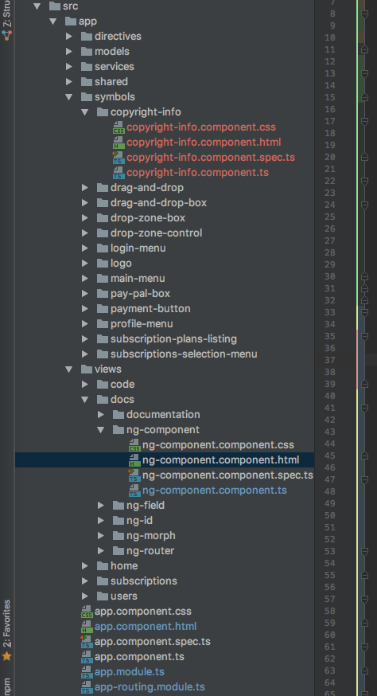
The Symbol can now be used anywhere in the app where the custom name tag for that component is specified:
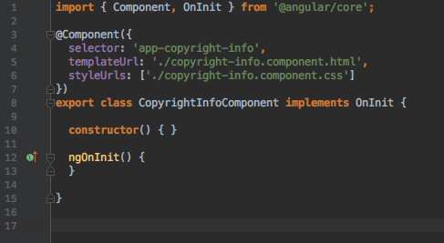
Using the custom element tag <app-copyright-info> anywhere in any other HTML page will call up this component for use:
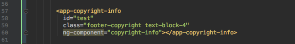
All told, when you finally hit the download button on FreeFormJS and see the above automatically generated in your code, it's a very nice feeling!
That being said passing parameters to your component is part of Angular 2. You have to be familiar with Angular 2 to know how this works, but this is what it looks typically looks like:
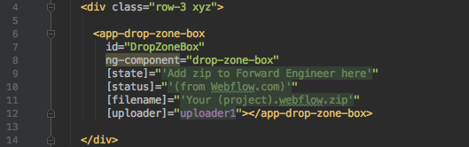
Between Webflow's ability to allow you to quickly make changes to your HTML layout and your css attributes, and FreeFlowJS automatic conversion into Angular 2, your Symbols and now components ...
With FreeFlowJS, it's that simple!